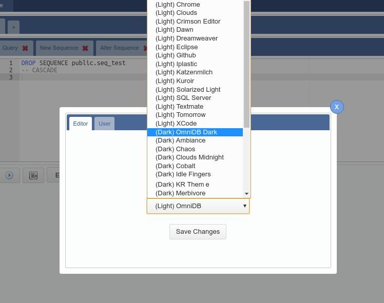
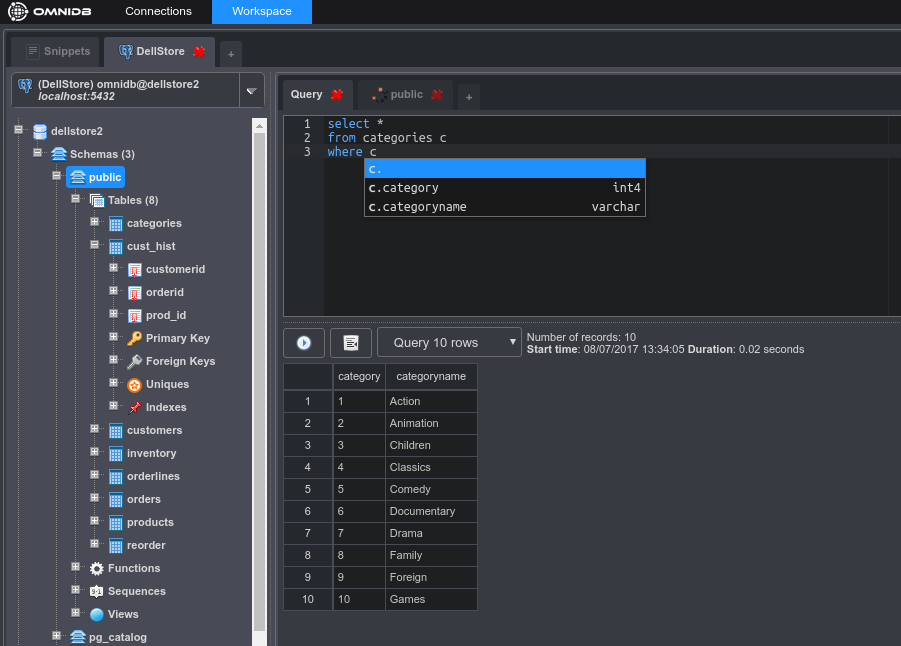

Every interaction the user does with every database is logged in OmniDB's SQL History. To access it you need to click on the clock-like icon on the upper right corner. OmniDB will show a pop-up with all actions in a paginated grid.
Each action shows date time it started, the time it ended, the duration, the mode, the status and the command. As every grid in OmniDB, you can right click on the command and click View Content, where another pop-up will open showing the content in a larger text editor.
Also in the upper right corner, by clicking in the gear-like icon, OmniDB will open the User Settings pop-up. It is composed by two tabs:
User: Allows the user to change its password. More user settings will be added in future.
Editor: Allows the user to change the font size of the SQL Editor, and also change the entire OmniDB theme. There are a lot of OmniDB themes, each of them change the syntax highlight color of the editor. They are also categorized in light and dark themes. A light theme is the default; a dark theme will change the entire interface of OmniDB.

Every change in user settings require that you either:

